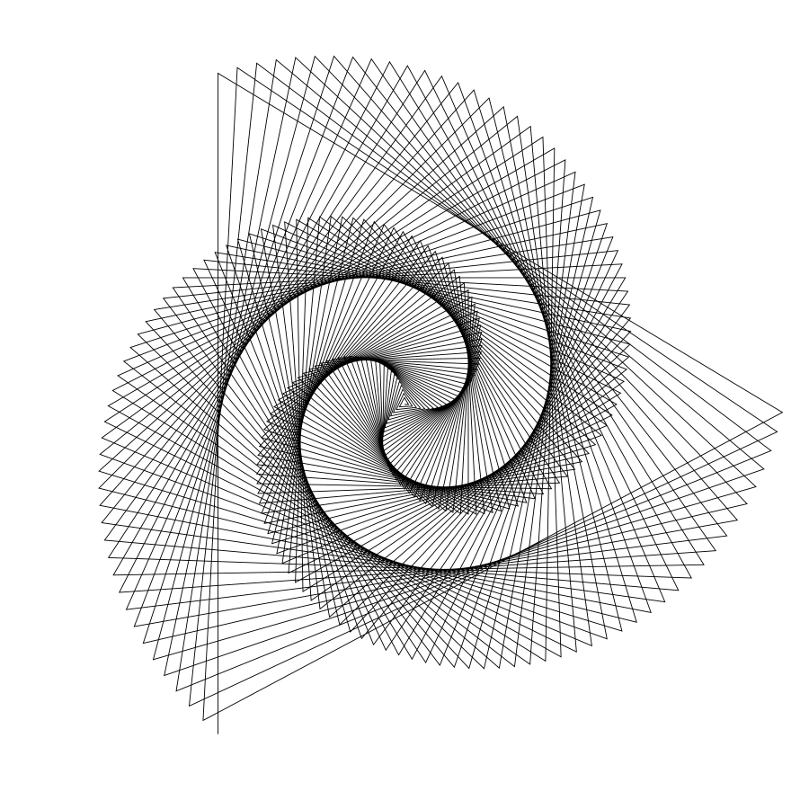
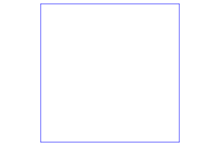
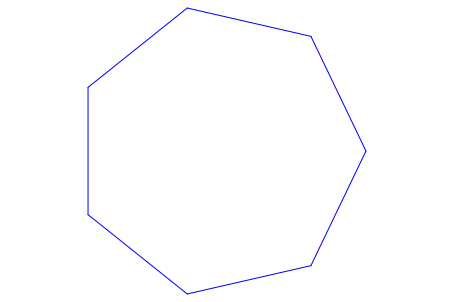
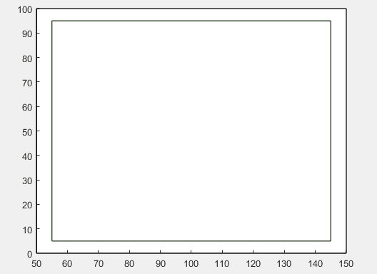

The general term "Turtle Graphics" refers to an easy way to introduce not just the synthesis of simple computer graphics,
but also object oriented concepts of programming languages. The general idea involves the drawing of lines to make shapes,
graphs, and images with different colors, sizes, and widths. In a simpler sense, imagine a turtle (the animal) holding
a pen, and moving while the pen is held down. This allows for a mark to be made in the fashion of a line, creating a
portion of a drawing. Scaling this up, you can make aesthetically pleasing computer graphics using advanced algorithms,
or you can go back to the drawings you made while you were picking your nose in second grade.

Though many packages for Turtle exist for many programming languages, even in MATLAB, I felt it would be useful for
me to implement a simple version of these iterative drawings. I always say to make test cases, but in this case, it
is easier to just think about what our output should look like. For instance, here are some input values we can give
our Turtle to do, and the expected output.
| Possible Inputs |
Expected Output |
| Turtle ➞ drawSquare |

|
| Turtle ➞ drawPolygon(7 sides) |

|
Okay, so this is not very complicated, or so it seems. We must first make the foundation of our Turtle object. Think
about the properties it will need to have. An aspect of object oriented programming is considering the characteristics
of your class; they must be general enough to describe all instances of the class but specific enough to differentiate
it from other types. You must also consider default values of these properties, or more simply, "where should we start
if someone wants to make a Turtle?". Let's implement this basic class definition in MATLAB.
classdef Turtle
% TURTLE Turtle with a pen
% An implementation of iterative drawings
properties
% coordinates
x
y
% direction of turtle
heading
% pen status
pen_on_paper
% wait time (lower the faster)
wait
% turtle's pen
pen
end
methods
% Default constructor
% Initializes default values
function obj = Turtle()
% make a new Turtle
obj.x = 0;
obj.y = 0;
obj.heading = 0;
obj.pen_on_paper = true;
obj.pen = Pen();
obj.wait = 0.25;
end
end
end
Now, we have a foundation Turtle object that can make some drawings for us. The next thing to do is to implement some
helper functions. These methods are short (well, hopefully short) algorithms that will assist you in moving the turtle
around, making shapes, changing the pen color, or even change direction. Let's consider what and how many member functions
we need.
| Possible Member Functions |
Expected Behavior |
| moveForward to (distance) |
Using the distance formula, find:
1.) The new x point after moving distance
2.) The new y point after moving distance
Then, draw a line from the first to final point.
|
| rotate orientation to (angle) |
Add or subtract the angle value in degrees.
But be careful: check:
Is the new angle more than 360?
If so, roll over to 0 and add the difference
|
| draw a triangle with side (length) |
Do this three times:
1.) Draw a line with given length (maybe use moveForward?)
2.) Turn 120 degrees
|
And we can continue. You can see how math formulas can come in useful here, like the distance formula and properties
of basic geometric shapes. You can see some of my methods at the end of the page. Here are some Turtle creations!

% ... above is class declaration
% Moves the turtle in the direction of the heading by a distance
function obj = forward(obj,distance)
x2 = obj.x + distance*cosd(obj.heading);
y2 = obj.y + distance*sind(obj.heading);
if obj.pen_on_paper
% draw a line
hold on
l = line([obj.x x2],[obj.y y2]);
l.Color = obj.pen.color;
l.LineWidth = obj.pen.width;
hold off
pause(obj.wait) % can you guess what this does?
end
% update location
obj.x = x2;
obj.y = y2;
end
% Draws a regular polygon given the side count and length
function obj = polygon(obj, sides, length)
angle = 180 - (180*(sides - 2))/sides;
for i=1:sides
obj = obj.forward(length);
obj = obj.rotate(angle);
end
end
% Creates a fractal tree given a distance
% Actually decrements the distance by 10 each iteration, until it
% is 0 (which we cannot draw, so the loop ends.
function obj = recursiveTree(obj, distance)
if (distance > 0)
% Set our width and color to change with each distance
% level, making it seem like a real tree
obj.pen.width = distance / 10;
obj.pen.color = [(distance / 10)*0.1 0 0];
% hardcoding is cool
obj = obj.forward(distance);
obj = obj.left(30);
obj = obj.recursiveTree(distance - 10);
obj = obj.right(60);
obj = obj.recursiveTree(distance - 10);
obj = obj.left(30);
obj = obj.penUp();
obj = obj.backward(distance);
obj = obj.penDown();
end
end